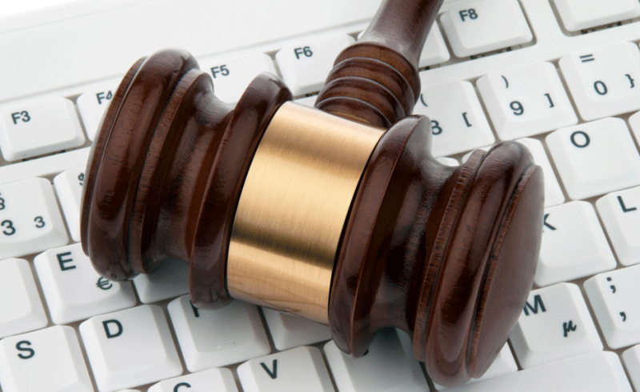

Regler ved bruk av internett
Jeg skal ta for meg kompetansemålet: «gjøre rede for og argumentere for nødvendigheten av regelverk og etiske normer for bruk av informasjonsteknologi».
Internett ble i løpet av 1990-tallet viktig for informasjonsspredning og kommunikasjon. Det førte til mange fordeler, der enklere kommunikasjon, kunnskapsdeling, underholdning og handel er noen av disse. (Wikipedia, 2019) I tillegg til de positive er det også flere negative sider, som f.eks. digital mobbing, spredning av privat informasjon og bilder, svindel og manipulasjon. Hvordan kan vi unngå disse negative konsekvensene?
For å begrense skadene er det viktig med normer og regler for bruk av internett. Etiske normer er regler eller forventninger til hvordan vi bør oppføre oss i samfunnet. Disse gjelder også når man er på nett. I tillegg til vanlige normer må man på internett forholde seg til nettvettsregler, som både handler om hvordan du skal oppføre seg på nett og hvordan du skal beskytte deg selv på nettet. Typiske regler kan være: «Vær mot andre på nettet som du vil at andre skal være mot deg» og «gi aldri ut passordene dine til noen». (Langslet, Solheim, & Brandtzæg, 2017)Årsaken til at disse etiske reglene ofte blir brutt er at man kan være anonym på internett. Når man er anonym på nett er det lettere å si slemme eller stygge ting som kan såre og fornærme andre. Siden det ikke er et lovbrudd blir det ingen konsekvenser.
Hvis man bryter lovene i samfunnet kan man bli straffet. Dette gjelder også når lovbruddene skjer på internett. Her er noen eksempler på lover og regler som også gjelder handlinger gjort på nettet. Åndsverkloven sier at den som har skapt et åndsverk, som en tekst, bilde, video eller musikk har opphavsretten. Dermed kan de bestemme hvordan og om det kan brukes. I loven står det at man ikke kan dele et bilde, som viser en person som er gjenkjennelig, uten å spørre personen først. Dette er en lov som ofte brytes, og det kan bli spesielt belastende ved spredning av bla. naken- og festbilder. På grunn av sosiale medier spres spesielt slike bilder ekstremt fort, dette kalles nettverkseffekt. Denne problemstillingen blir også fanget opp i straffelovens §311, som tar for seg handlinger som seksualiserer barn. I tillegg har vi i §263, §202 og §204, som skal beskytte oss mot truende atferd, identitetstyveri og hacking og innbrudd i datasystemer. (Langslet, Solheim, & Brandtzæg, 2017)
Det er ikke bare i Norges lover vi har regler for bruk av internett. Hver dag ser vi sponset innhold på tv og nett, og derfor krever markedsføringsloven merking av reklame på nett. Dette er viktig fordi folk skal vite hva som er betalt innhold og hvem som er den egentlige avsenderen. (Forbrukertilsynet, 2019) Facebook og Instagram har også laget noen egne regler for deres plattformer slik at brukerne blir tryggere og innholdet blir mer pålitelig. De har bla. ansatt egne faktasjekkere som skal passe på at det ikke blir delt fake news på deres plattformer. (Krogh, 2019)
Uansett om du er ute blant folk eller bak en datamaskin bør de samme normene og reglene gjelde. Internett skal være et trygt sted der vi kan dele, kommunisere og være kreative, men det brukes dessverre også for å skade folk psykisk og hemme samfunnet. Derfor er det viktig at vi har lover og regler for nettet. Reglene gir oss også et tryggere samfunn fordi de stopper spredningen av fake news, som kan skape uro. Det kan dessverre være vanskelig å håndheve reglene fordi mennesker kan være anonyme og internett er så stort. I fremtiden vil det forhåpentligvis være en algoritme som kan stoppe fake news og hetsende organisk innhold.